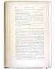
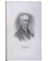
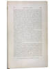
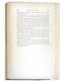

The Official Story
Chapter 2
Henry Sewall mounts an attack against Rev. Mr. Foster
Hallowell's town clerk Captain Henry Sewall had experienced a profound religious conversion several years before the arrival of Isaac Foster. In his view, Foster did not understand the critical importance of man's depravity and God's grace when considering the fate of men. He thought the young minister put too much faith in human deeds and human will.Fortunately for us, Henry Sewall (like Martha Ballard) recorded the events in his life. Sewall's diary, which is not nearly as massive as Martha's, is very different from hers in content. It is filled with the political and church events which Martha mentions only peripherally.
Read what Sewall said about a Sabbath meeting he approved of. It tells you a great deal about the kind of religious experience he was looking for. He wrote: "Evidenced a remarkable and gracious manifestation of God's peculiar goodness. Had meat to eat which the world knows not of." For Sewall, church was a place to be awakened; he wanted the heavens to open. He believed God chose those who would be saved. And he believed he'd been chosen. Like other Evangelical Congregationalists, Sewall believed that human beings are innately depraved, and that God through Christ displayed mercy and forgiveness to a predestined elect, whose salvation had nothing to do with their measley deeds on earth. Sewall clearly saw himself as one of the elect, able to sample "meat the world knows not of."
Henry Sewall was alarmed by the preaching of the young Isaac Foster. See what Sewall recorded in his diary about Foster on July 23 of 1786, on August 6 and again on August 8 and August 15. Just after Foster moved to town, Sewall complained: "Mr Foster preached --poor Doctrine." He called one of Foster's sermons "rank Arminianism." And twice, he met privately with Foster, to convince him "of the impropriety of his doctrine" and interview him "respecting his...heretical doctrines." Sewall also complained about the sermon given by Isaac Foster's brother on October 8th which he dubbed "flagrant freewill doctrine."
The "Arminians" Sewall referred were a sophisticated, mostly urban group who did not believe human beings are innately depraved; in fact, they believed that God's conduct of the universe proceeded from reasonable principles intelligible to the human mind. A letter Henry Sewall wrote to his son has survived; in it, we can read his doctrinal views of various sects, since he spelled them out to instruct his son.
| What was Martha's reaction to Isaac Foster's sermons? |
When Foster's ordination drew near, Sewall fasted, and prayed, and on October 4th, drew up a list of seven objections to the new minister which he presented to the young minister and to the town's ordination council. (As written up in North's town history, no objection #5 was listed.) His October 11th attempt to block the ordination failed, and the next day he sarcastically recorded Foster's claims before the council. After that he boycotted public worship, and was heard accusing the Rev. Mr. Isaac Foster of being a liar.

| previous |
The New Minister | |
| next |
What was the response of the young Rev. Mr. Isaac Foster? Did he turn the other cheek? |
| The History of Augusta North, James W. 1870 |
View Image View Frames version |
| Title page | Page 226 | Page 226 insert | Page 227 | Page 228 | |||
 |
 |
 |
 |
 |
|
|
Page 226 |
|
|||||||||||||
|
|||||||||||||||
|
|
|
||||||||||||||